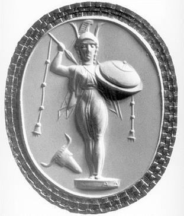

Ở đất Argolide, vào lúc mà cuộc tình duyên của thần Sông-Inachos với tiên nữ Mélia sinh ra Phoronée, người đàn ông đầu tiên của mặt đất mênh mông, thì ở đảo Samothrace, một người con trai của thần Zeus tên là Dardanos cũng được giáng hạ xuống trần. Qua bao năm tháng, đến năm ấy thật rủi ro, một trận đại hồng thủy xảy ra làm ngập băng hòn đảo. Các sinh vật đều chết hết trừ Dardanos may mắn nhờ có một chiếc mảng mà sống sót được. Lênh đênh trên biển nước không biết bao ngày, Dardanos cứ hướng chiếc mảng của mình về phía đông mà đi tới. Cho đến một ngày kia chàng nhìn thấy đất liền. Ôi, thật vô cùng sung sướng. Đó là bờ biển xứ Phrygie. Tới đây chàng được vua Teucer, con trai của thần Sông-Scamandre và tiên nữ Nymphe Ida, đón tiếp. Xưa kia lúc con người mới xuất hiện trên thế gian, đất đai hãy còn hoang vắng lắm, chẳng có mấy người sinh sống. Vì lẽ đó Teucer vô cùng sung sướng khi có một người bạn đến chung sống với mình. Lập tức nhà vua đem chia cho Dardanos một phần tài sản trong gia tài vô cùng to lớn của mình. Hơn thế nữa, hồi đó các chàng trai ở rể cũng rất hiếm mà Dardanos lại là con dòng cháu giống nên Teucer gả luôn con gái của mình cho người khách đáng thương đáng quý ấy. Teucer chết, Dardanos nối ngôi. Từ đây bắt đầu dòng họ của những người Dardanos trị vì trên vương quốc Troie. Đó là một dòng giống thiêng liêng nhưng lại chịu một số phận bất hạnh vô cùng.
Hồi đó ở vùng đồng bằng Troade trên đất Phrygie, có một ngọn đồi tên là Ngọn đồi Lầm lẫn mà sự tích của nó bắt nguồn từ Até, vị nữ thần Lầm lẫn đã nhiều lần làm cho Zeus tính một đằng nhưng lại làm ra một nẻo. Chính nàng là người làm cho Zeus hy vọng vào lời phán truyền: “Đứa bé nào sinh ra trước nhất sẽ được làm vua ở đất Mycènes” (hẳn là Héraclès) mà rồi thành thất vọng. Điều này khiến Zeus tức giận vô cùng, tức giận đến nỗi Zeus túm lấy tóc nữ thần Até (có người bảo nắm lấy cánh tay) quẳng ngay xuống trần.
Até từ chín tầng mây rơi xuống, rơi đúng ngay vào một ngọn đồi, vì thế ngọn đồi đó mang tên là Ngọn đồi Lầm lẫn mà Số mệnh đã định trước rằng một ngày kia thành Troie sẽ dựng lên trên ngọn đồi đó. Vì thế tất cả lịch sử của người Troie đều bị nữ thần Lầm lẫn chi phối, và những ý nghĩ khôn ngoan nhất của họ, những dự tính, lo xa của họ nhiều khi lại phản lại họ. Ngay từ nguồn gốc của thành Troie đã có bàn tay của Số mệnh chi phối, Zeus dẫn con người đến những tai ương, thảm họa dường như không sao cưỡng lại được. Hãy bắt đầu từ việc xây thành của Dardanos. Dardanos lên ngôi trị vì trên vùng đồng bằng Troade. Nhà vua cho xây thành trên sườn núi Ida, một ngọn núi cao bao quát khắp vùng đồng bằng. Thuở ấy đô thành của Dardanos mang tên là Dardania. Qua hai hoặc ba đời sau một người cháu của Dardanos lên nối ngôi tên gọi là Tros, và tiếp đó con trai của Tros lên ngôi, tên gọi là Ilos. Ilos lên làm vua, việc đầu tiên là muốn mở mang bờ cõi cho xứng đáng với cơ nghiệp của cha ông truyền lại. Nhà vua quyết định sẽ phải tìm đất để xây một đô thành ở gần bờ biển. Năm đó, một vị vua láng giềng trên đất Phrygie mở hội, mời Ilos tham dự. Vốn là người tài ba lỗi lạc, Ilos đoạt hầu hết các giải trong các cuộc thi đấu. Cảm phục tài năng của Ilos, vị vua láng giềng đã cầu xin thần thánh ban cho một lời sấm ngôn chỉ dẫn cho việc chọn đất xây thành của Ilos. Lời sấm truyền cho biết: Hãy xây trên mảnh đất nào mà con bò đốm trắng đốm đen nằm nghỉ - con bò mà Ilos được giải thưởng trong những cuộc thi đấu. Danh tiếng của đô thành xây trên mảnh đất đó sẽ vang dội đến tận trời xanh.
Tuân theo lời sấm truyền, Ilos trở về, sáng dậy ra đồng để ý theo dõi con bò có đốm trắng đốm đen. Chàng đi theo nó cho tới lúc nó nằm nghỉ, và chỗ đó chính là Ngọn đồi Lầm lẫn. Ilos bèn truyền lệnh cắm đất xây thành. Xây xong, Ilos đặt tên cho nó là Ilion để đời sau ghi nhớ tới người đã có công xây dựng nên nó - vua Ilos. Sau này người ta gọi đô thành Ilion bằng một cái tên nữa: thành Troie.
Thời gian trôi đi bình thản, không có một biến cố gì xảy ra đáng phải lo ngại. Tuy nhiên, Ilos vẫn băn khoăn một điều, không rõ mình xây thành như thế đã đúng với lời sấm truyền chưa. Ilos bèn cầu khẩn thần Zeus, xin thần ban cho một dấu hiệu gì ứng nghiệm. Thần Zeus ưng chuẩn, và một buổi sáng kia, Ilos khi tỉnh dậy thấy ngay trước sân một bức tượng, một bức tượng bằng gỗ thật đẹp, tuy không cao to lắm. Bức tượng này tên gọi là Palladion, hai chân dính vào nhau, tay phải cầm một ngọn lao, tay trái cầm một búp sợi và một ống suốt. Người ta bảo nó là tượng nữ thần Athéna. Lại có một lời sấm truyền cho người Troie biết rõ hơn về kỳ tích này: Đây là báu vật thần Zeus ban cho người Troie. Thành Troie sẽ bền vững đời đời, bất khả xâm phạm chừng nào mà bức tượng đó ở trong tay người Troie, không rơi vào tay người khác. Tức khắc người Troie cho xây một ngôi đền lộng lẫy ở trong thành để thờ bức tượng Palladion.
Do tích chuyện này nên ngày nay trong văn học thế giới Palladion chuyển thành danh từ chung với nghĩa: sự bảo vệ hoặc người bảo vệ.

Ilos có hai người con, một trai tên gọi Laomédon, một gái tên gọi Thémisté. Sự nghiệp xây thành của Ilos mới xong được phần chính trên ngọn đồi, còn ở dưới chân đồi thì chưa làm được chút gì. Laomédon lên nối ngôi cha tiếp tục công cuộc xây thành. Nhà vua mời thần Apollon và thần Poséidon tới xây giúp. Nhưng khi các vị thần này hoàn thành công việc thì Laomédon lại quỵt công bội ước, không trao tất cả số súc vật do đàn súc vật của mình sinh đẻ ra trong năm ấy như đã hứa. Chẳng những thế, Laomédon lại còn đe dọa sẽ xẻo tai cắt mũi hai vị thần, nếu các vị cứ lằng nhằng đòi công xá mãi. Phải nói công trình xây dựng những bức tường thành dưới chân đồi rất lớn. Nó chẳng những bao quanh che chở cho khu thành trên ngọn đồi cao mà còn kéo dài xuống tận vùng bờ biển, nơi hai vị thần đã xây dựng cho Laomédon một bến cảng thuận lợi. Chuyện xưa kể, cùng xây thành với hai vị thần còn có người anh hùng Éaque là cha của người anh hùng Pélée và là ông của người anh hùng Achille sau này. Sau khi Apollon, Poséidon và Éaque xây xong những bức tường thành thì xảy ra một kỳ tích: có ba con rắn cực to bỗng đâu từ dưới biển hiện lên bò vào thành. Hai con bò vào quãng tường thành do Apollon và Poséidon xây. Chúng chỉ vừa mới trườn lên tường thì rơi ngay xuống dưới đất chết tươi. Còn một con thì bò vào chỗ tường thành do Éaque xây. Con này băng được qua tường vào trong thành. Kỳ tích này như tiên báo cho người Troie biết trước rằng chính con cháu của người anh hùng Éaque sẽ đánh chiếm được thành Troie và quãng tường thành do người trần thế xây là nơi hiểm yếu. Laomédon còn bội ước với cả người anh hùng Héraclès là người đã có công cứu Hésione, con gái mình, thoát khỏi sự trừng phạt của thần Poséidon. Sau này Héraclès chiêu tập các anh hùng Hy Lạp sang vây đánh thành Troie trị tội tên vua lá mặt lá trái đó. Chàng thể theo nguyện vọng của Hésione tha chết cho Priam, con của Laomédon, Priam nối nghiệp Laomédon trị vì ở thành Troie, lấy Hécube con gái vua Dymas, một vị vua trị vì ở xứ Phrygie, làm vợ (Có chuyện kể con gái vua Cissée ở xứ Thrace). Priam sinh được năm mươi người con trai và năm mươi người con gái. Trong số những người con trai của Priam, Hector là người anh hùng kiệt xuất nhất. Còn chàng Paris em ruột của Hector, nổi danh là một con người tài hoa, xinh đẹp. Thành Troie trải qua bao đời vua, từ lúc khởi công xây dựng cho đến khi hoàn thành, đến đời Priam luôn luôn nổi tiếng khắp bốn phương là một đô thành hùng vĩ và giàu có vào bậc nhất trong vùng biển Égée.